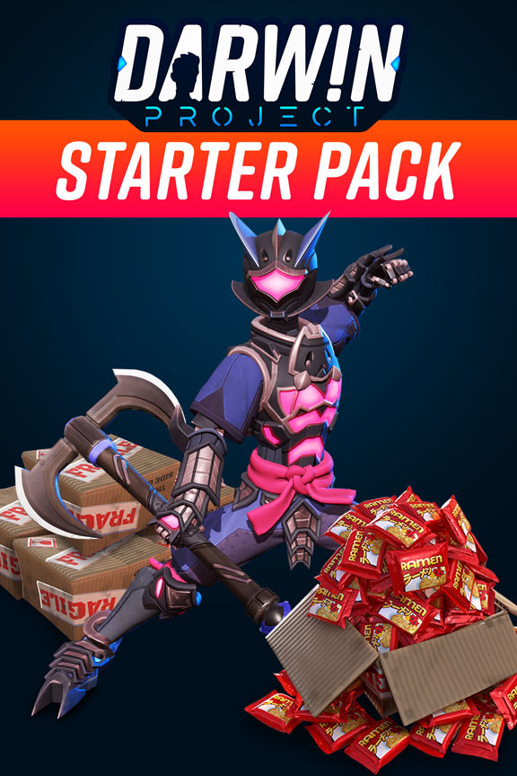

Darwin's Dinner Prototype
Darwin's Dinner Prototype
Details
|  | |
| Playtime | Not Played |
| Last Activity | Never |
| Added | 4/12/2022 22:47:41 |
| Modified | 4/25/2022 18:46:44 |
| Completion Status | $Check Out |
| Library | Steam |
| Source | Steam |
| Platform | PC (Windows) |
| Release Date | 5/26/2017 |
| Community Score | |
| Critic Score | |
| User Score | |
| Genre | Demo |
| Developer | 2 Player Productions Double Fine |
| Publisher | |
| Feature | |
| Links | Community Hub Discussions Guides News Store Page PCGamingWiki |
| Tag | [EMT] Logo Missing |
Description
“I started feeling a little bogged down by the scope of Brutal Legend,” says Tim Schafer, founder of Double Fine. “It was really huge and I felt like the team had been doing it for a long time and had a very long way to go yet. I felt like they need a break…”
That break was Amnesia Fortnight, a two week game jam during which anyone at Double Fine can pitch an idea and, if it’s selected, lead a team to turn it from concept to working prototype. Now in its tenth year, the competition has gotten fierce and with the introduction of cameras and a full documentary, the pressure is on for these project leads to deliver…
The Amnesia Fortnight bundle includes the documentary series by industry stalwarts 2 Player Productions and the actual game prototypes you watched be developed! The doc series captures the mayhem of a 2 week jam, while enlightening the viewer about the industry and the people within it. The prototypes themselves are fascinating glimpses beyond the typical game experience, and coupled with the documentary, devotees of games can observe the creative process like never before!
Prototypes can be found in the Software section of your Steam Library after purchase.
2017 Prototypes:
2014 Prototypes:
2012 Prototypes:
Bonus Prototypes:
Requirements:
That break was Amnesia Fortnight, a two week game jam during which anyone at Double Fine can pitch an idea and, if it’s selected, lead a team to turn it from concept to working prototype. Now in its tenth year, the competition has gotten fierce and with the introduction of cameras and a full documentary, the pressure is on for these project leads to deliver…
The Amnesia Fortnight bundle includes the documentary series by industry stalwarts 2 Player Productions and the actual game prototypes you watched be developed! The doc series captures the mayhem of a 2 week jam, while enlightening the viewer about the industry and the people within it. The prototypes themselves are fascinating glimpses beyond the typical game experience, and coupled with the documentary, devotees of games can observe the creative process like never before!
Prototypes can be found in the Software section of your Steam Library after purchase.
2017 Prototypes:
- Darwin's Dinner
- The Gods Must Be Hungry
- I Have No Idea What I'm Doing
- Kiln
2014 Prototypes:
- Dear Leader
- Mnemonic
- Steed
- Little Pink Best Buds
2012 Prototypes:
- Autonomous
- Black Lake
- Spacebase DF-9
- Hack n Slash
- White Birch
Bonus Prototypes:
- Happy Song
- Costume Quest
- Brazen
Requirements:
- OS: Windows 7 / 8 / 10 (64-bit)
- Processor: AMD FX-8350 X8 (4,0 GHz)/Intel Core i7-4790 (3,6 GHz)
- Memory: 8 GB RAM
- Graphics: 4 GB, AMD Radeon R9 390 / NVIDIA GeForce GTX 970
- DirectX: Version 11
- Storage: 1.5 GB per prototype
- Internet: Required for Kiln multiplayer connection
- VR: Required for I Have No Idea What I'm Doing. Headsets: Oculus / Vive, Input: Hand / touch controllers, Play area: Default